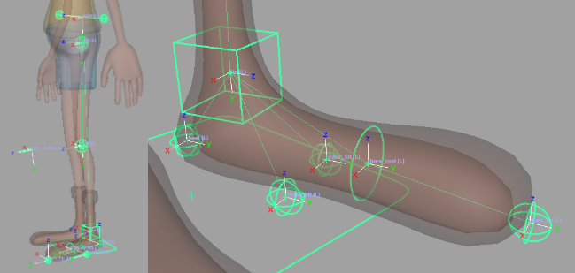

<div id="ember595" class="app-notification-bar __app-components__app-notification-bar ember-view"
    data-identifyelement="21">
    <div class="notification-detail-wrapper pt-9 pb-9 " data-test-id="visible-notification" data-identifyelement="22">
        <div class="notification-info" data-identifyelement="23">
            <div id="ember596" class="ember-view" data-identifyelement="24">
                <h1 class="readonly threshold-input-field kbase-content__title"><span data-test-id="article-title"
                        class="kbase-content__title--readonly collab-annotatable" id="article_title">CA Leg</span></h1>
                <div class="text__content kbase-content__description" dir="ltr">
                    <p dir="ltr"><span><span dir="ltr">Creates a cartoon leg and foot. Features include IK/FK, ribbons,
                                twist, soft IK, stretch, pin ctrl, foot roll, tilt, etc.</span></span><span></span></p>
                    <p dir="ltr"><span><u>Guides</u>:</span></p>
                    <ul>
                        <li dir="ltr"><span><strong dir="ltr">'Base'</strong>&nbsp;- Position slightly above the pelvis;
                                does not represent an anatomical bone, but provides control over the root of the
                                leg.</span></li>
                        <li dir="ltr"><span><strong>'</strong><strong>Root'</strong>&nbsp;- Position where
                                the&nbsp;<span dir="ltr">pelvis&nbsp;and&nbsp;</span>hip joint connect.</span></li>
                        <li dir="ltr"><span><strong>'Mid'</strong>&nbsp;- Position at the knee.</span></li>
                        <li dir="ltr"><span><strong>'Tip'</strong>&nbsp;- Position at the ankle.</span></li>
                        <li dir="ltr"><span><strong dir="ltr">'Pole Vector'</strong>&nbsp;-&nbsp;<span
                                    dir="ltr">Position where the IK pole vector ctrl will be placed. Movement is limited
                                    to the 'Root', 'Mid', and 'Tip' guides plane.</span></span></li>
                        <li dir="ltr"><span><strong>Heel</strong>&nbsp;- Position at the back of the foot.</span></li>
                        <li dir="ltr"><span><strong>Inner Tilt&nbsp;</strong>- Pivot point at the foot's inner side
                                (used by 'master_ctrl' translateX for tilting the leg).</span></li>
                        <li dir="ltr"><span><strong>Outer Tilt</strong>&nbsp;- Pivot point at the foot's outer
                                side&nbsp;<span dir="ltr">(used by 'master_ctrl' translateX for tilting the
                                    leg)</span>.</span></li>
                        <li dir="ltr"><span><strong>Toes Root</strong>&nbsp;- Position where the toes start.</span></li>
                        <li dir="ltr"><span><strong>Toes Tip</strong>&nbsp;- Position in front of the foot.</span></li>
                    </ul>
                    <p><span></span><span></span></p>
                    <p dir="ltr"><span><u>Attributes</u>:</span></p>
                    <ol>
                        <li dir="ltr"><span dir="ltr"><strong>'Ctrls Scale'</strong><span>&nbsp;</span>- Scale all the
                                node ctrls. Note that the attachments<span>&nbsp;</span><a dir="ltr"
                                    href="https://newaccount1619350932681.freshdesk.com/a/solutions/articles/69000440777"
                                    rel="noopener noreferrer" target="_blank"><strong>'Ctrls
                                        Settings'</strong></a><span>&nbsp;</span>and<span>&nbsp;</span><a dir="ltr"
                                    href="https://newaccount1619350932681.freshdesk.com/a/solutions/articles/69000440812"
                                    rel="noopener noreferrer"
                                    target="_blank"><strong>'CtrlsShape'</strong></a><span>&nbsp;</span>will override
                                this.<span>&nbsp;</span><a dir="ltr" href="https://youtu.be/-1fpRw6oJME?t=31"
                                    rel="noopener noreferrer" target="_blank"><strong>[Video]</strong></a></span></li>
                        <li dir="ltr"><span dir="ltr"><strong>'Clean Transformations'</strong><span>&nbsp;</span>- If
                                checked, the<span>&nbsp;</span><a dir="ltr"
                                    href="https://newaccount1619350932681.freshdesk.com/a/solutions/articles/69000433385"
                                    rel="noopener noreferrer" target="_blank"><strong>zeroed
                                        pose</strong></a><span>&nbsp;</span>will be the same as the<span>&nbsp;</span><a
                                    dir="ltr"
                                    href="https://newaccount1619350932681.freshdesk.com/a/solutions/articles/69000433385"
                                    rel="noopener noreferrer" target="_blank"><strong>bind pose</strong></a>; if
                                unchecked, when zeroing the ctrls, they will align with a world axis specified in the
                                following two attributes.<span>&nbsp;</span><strong><a
                                        href="https://youtu.be/-1fpRw6oJME?t=61" rel="noopener noreferrer"
                                        target="_blank">[Video]</a></strong></span></li>
                        <li dir="ltr"><span dir="ltr"><strong>'World Orientation'</strong><span>&nbsp;</span>- The world
                                axis the ctrls will align with when zeroed. Usually, this attribute's default value is
                                the correct value.<span>&nbsp;</span><strong><a href="https://youtu.be/-1fpRw6oJME?t=61"
                                        rel="noopener noreferrer" target="_blank">[Video]</a></strong></span></li>
                        <li dir="ltr"><span dir="ltr"><strong>'World Orient Twist'</strong><span>&nbsp;</span>- Along
                                with 'World Orientation', defines the ctrls zeroed pose. Usually, the default value of 0
                                is the correct value.<span>&nbsp;</span><strong><a
                                        href="https://youtu.be/-1fpRw6oJME?t=61" rel="noopener noreferrer"
                                        target="_blank">[Video]</a></strong></span></li>
                        <li dir="ltr"><span dir="ltr"><strong>'Expose RotateOrder'</strong><span>&nbsp;</span>- Exposes
                                all the ctrls '<u>RotateOrder</u>' attribute in the Channel Box.<span>&nbsp;</span><a
                                    dir="ltr" href="https://youtu.be/-1fpRw6oJME?t=149" rel="noopener noreferrer"
                                    target="_blank"><strong>[Video]</strong></a>&nbsp;</span></li>
                        <li dir="ltr"><span dir="ltr"><strong>'Secondary Ctrls'</strong><span>&nbsp;</span>- Secondary
                                ctrls are added under some ctrls to help prevent gimbal lock.<br />A visibility
                                attribute is added to the parent ctrl.<span>&nbsp;</span><a dir="ltr"
                                    href="https://youtu.be/-1fpRw6oJME?t=157" rel="noopener noreferrer"
                                    target="_blank"><strong>[Video]</strong></a>&nbsp;</span></li>
                        <li dir="ltr"><span dir="ltr"><strong dir="ltr">'Ik Fk Switch'</strong><span>&nbsp;</span>-
                                Select where the '<u>Ik Fk Switch</u>' attribute and other shared attributes are
                                placed:<span>&nbsp;</span><a dir="ltr" href="https://youtu.be/-1fpRw6oJME?t=171"
                                    rel="noopener noreferrer" target="_blank"><strong>[Video]</strong></a></span>
                            <ul>
                                <li dir="ltr"><span>'<u>switch_ctrl</u>' - Places them on a ctrl that follows the leg
                                        tip (default).</span></li>
                                <li dir="ltr"><span><span dir="ltr">'<u>proxy_attrs</u>'&nbsp;</span>- places them as
                                        shared attributes (proxy attributes), on both the IK tip ctrl and the FK tip
                                        ctrl.</span></li>
                            </ul>
                        </li>
                        <li dir="ltr"><span><span dir="ltr"><strong>'Switch Ctrl Offset'</strong>&nbsp;- Position offset
                                    of 'switch_ctrl' from the 'tip_jnt'.</span></span></li>
                        <li dir="ltr"><span><span dir="ltr"><strong>'Volume'</strong>&nbsp;- Adds '<u>Auto Volume</u>'
                                    and '<u>Manual Volume</u>' attributes.</span></span></li>
                        <li dir="ltr"><span><span dir="ltr"><strong>'Pin Ctrl'</strong>&nbsp;-&nbsp;</span>Add a
                                'pin_ctrl' that&nbsp;constrains&nbsp;'mid_ctrl' when activated. To activate this ctrl
                                use the '<u dir="ltr">Pin</u>' attribute on 'mid_ctrl'.<br />Use a&nbsp;<span
                                    dir="ltr"><a
                                        href="https://newaccount1619350932681.freshdesk.com/a/solutions/articles/69000440934"
                                        rel="noopener noreferrer"
                                        target="_blank"><strong>'SpaceSwitch'</strong></a></span>&nbsp;attachment for
                                'pin_ctrl' to properly use this feature.&nbsp;</span></li>
                        <li dir="ltr"><span><span dir="ltr"><strong>'Mirror Behaviour'</strong>&nbsp;</span>-&nbsp;Only
                                affects mirrored nodes.</span>
                            <ul>
                                <li dir="ltr">
                                    <p dir="ltr"><span><u>Unchecked</u>&nbsp;- The IK ctrls of mirrored nodes will align
                                            with the world, meaning that both legs will move and rotate in the same
                                            direction (default for legs).</span></p>
                                </li>
                                <li dir="ltr">
                                    <p dir="ltr"><span><u>Checked</u>&nbsp;- The IK ctrls of mirrored nodes will mirror
                                            orientations, meaning that both legs will reflect each other (default for
                                            arms).</span></p>
                                </li>
                            </ul>
                        </li>
                        <li dir="ltr"><span><strong>'IK Twist'</strong>&nbsp;- The attribute '<u>Twist</u>' is added to
                                'ik_tip_ctrl', giving you another control over the IK chain twist.</span></li>
                        <li dir="ltr"><span><strong>'Stretch'</strong>&nbsp;- The attributes '<u>Auto Stretch</u>' and
                                '<u>Manual Stretch</u>' are added to 'ik_tip_ctrl' for control over the leg
                                length.</span></li>
                        <li dir="ltr"><span><strong>'Toggle Pole Vector'</strong>&nbsp;- The attribute '<u>Toggle Pole
                                    Vector</u>' is added to 'ik_tip_ctrl', which can turn off the pole vector
                                constraint.</span></li>
                        <li dir="ltr"><span><strong>'Soft IK'</strong>&nbsp;- The attribute '<u>Soft Ik</u>' is added to
                                'ik_tip_ctrl', which helps fix the 'pop' in the animation when the IK chain gets fully
                                extended.</span></li>
                        <li dir="ltr"><span><strong>'Ctrls Translate'</strong>&nbsp;- If checked, animators will also be
                                able to translate the FK ctrls.</span></li>
                        <li dir="ltr"><span dir="ltr"><strong>'Ribbon Joints'</strong><span>&nbsp;</span>- How many
                                skinning joints each ribbon will have (total x2; upper ribbon and lower
                                ribbon).<span>&nbsp;</span><a dir="ltr" href="https://youtu.be/-1fpRw6oJME?t=198"
                                    rel="noopener noreferrer" target="_blank"><strong>[Video]</strong></a></span></li>
                        <li dir="ltr"><span><strong>'Ribbon Twist'</strong>&nbsp;- Allow the ribbon joints to twist.
                                Turn this off for creatures with external skeletons, such as spiders, or for characters
                                wearing rigid armor.</span></li>
                        <li dir="ltr"><span dir="ltr"><strong>'Ribbon Micro Ctrls'</strong><span>&nbsp;</span>- Add a
                                ctrl for every ribbon skinning joint.<span>&nbsp;</span><a dir="ltr"
                                    href="https://youtu.be/-1fpRw6oJME?t=211" rel="noopener noreferrer"
                                    target="_blank"><strong>[Video]</strong></a></span></li>
                        <li dir="ltr"><span dir="ltr"><strong>'Bezier Ctrls'</strong><span>&nbsp;</span>- Add ctrls that
                                deform the ribbons like a Bezier curve.<span>&nbsp;</span><a
                                    href="https://youtu.be/-1fpRw6oJME?t=222" rel="noopener noreferrer"
                                    target="_blank"><strong>[Video]</strong></a></span></li>
                        <li dir="ltr"><span><strong>'Bezier Ctrls Offset'</strong>&nbsp;- Position offset of the Bezier
                                ctrls from the joints chain.</span></li>
                    </ol>
                    <p dir="ltr"><span><u>Connections</u>:</span></p>
                    <ul>
                        <li><span><strong dir="ltr">'Root Input'</strong>&nbsp;- Drives the ctrls of this node except
                                the 'ik_tip_ctrl' and the 'ik_pv_ctrl'. Usually driven by the spine node.</span></li>
                        <li><span><strong dir="ltr">'IK Tip Input'</strong>&nbsp;- Drives the&nbsp;<span
                                    dir="ltr">'ik_tip_ctrl' and the 'ik_pv_ctrl'. Separate from 'Root Input' because we
                                    often want the IK ctrls to move with the&nbsp;</span><strong><span dir="ltr"><a
                                            dir="ltr"
                                            href="https://newaccount1619350932681.freshdesk.com/a/solutions/articles/69000436626"
                                            rel="noopener noreferrer" target="_blank"></a></span></strong><span
                                    dir="ltr"><a dir="ltr"
                                        href="https://newaccount1619350932681.freshdesk.com/a/solutions/articles/69000436626"
                                        rel="noopener noreferrer" target="_blank"></a><a dir="ltr"
                                        href="https://newaccount1619350932681.freshdesk.com/a/solutions/articles/69000436626"
                                        rel="noopener noreferrer" target="_blank"><strong dir="ltr">'Base
                                            Node'</strong></a>.</span></span></li>
                        <li><span><span dir="ltr"><strong dir="ltr">'Root Output'</strong>&nbsp;- An output at the
                                    'root_jnt' (pelvis).</span></span></li>
                        <li><span><span dir="ltr"><strong dir="ltr">'Ankle Output'</strong>&nbsp;- An output at the
                                    'tip_jnt'.</span></span></li>
                        <li><span><span dir="ltr"><strong dir="ltr">'Toes Tip Output'</strong>&nbsp;- An output at the
                                    'toes_tip_root_jnt'.</span></span></li>
                    </ul>
                    <p dir="ltr"><span>_____________________________________________</span></p>
                    <p dir="ltr"><span>Get Arise at:&nbsp;<a dir="ltr"
                                href="https://www.ariserigging.com/">https://www.ariserigging.com</a></span></p>
                </div>
            </div>
        </div>
    </div>
</div>
